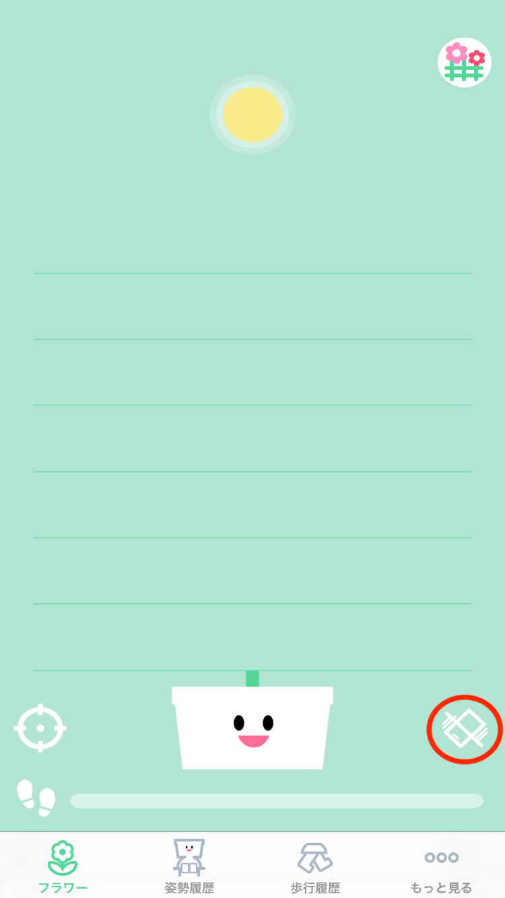
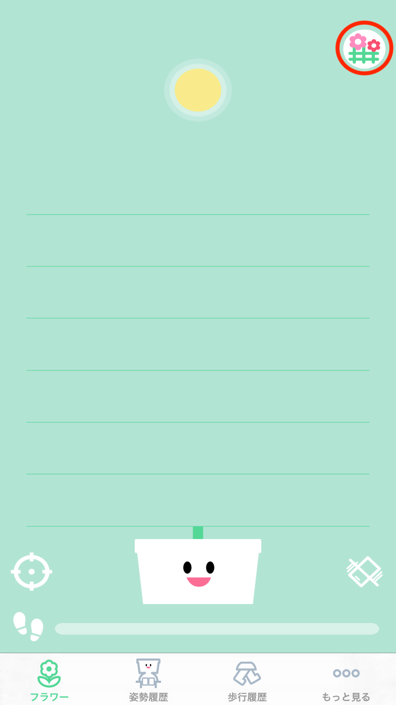
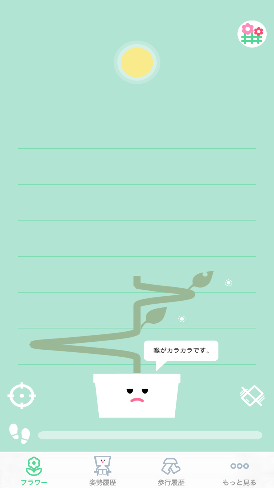
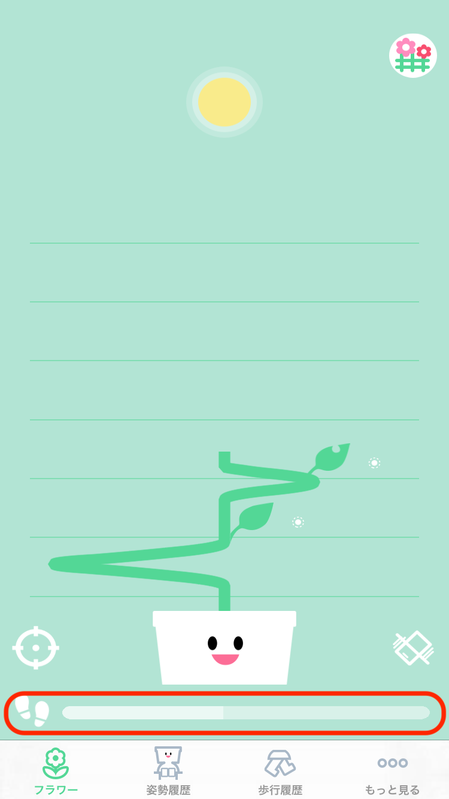
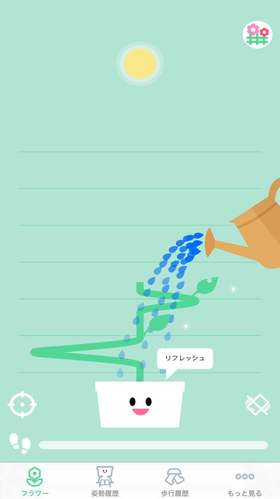
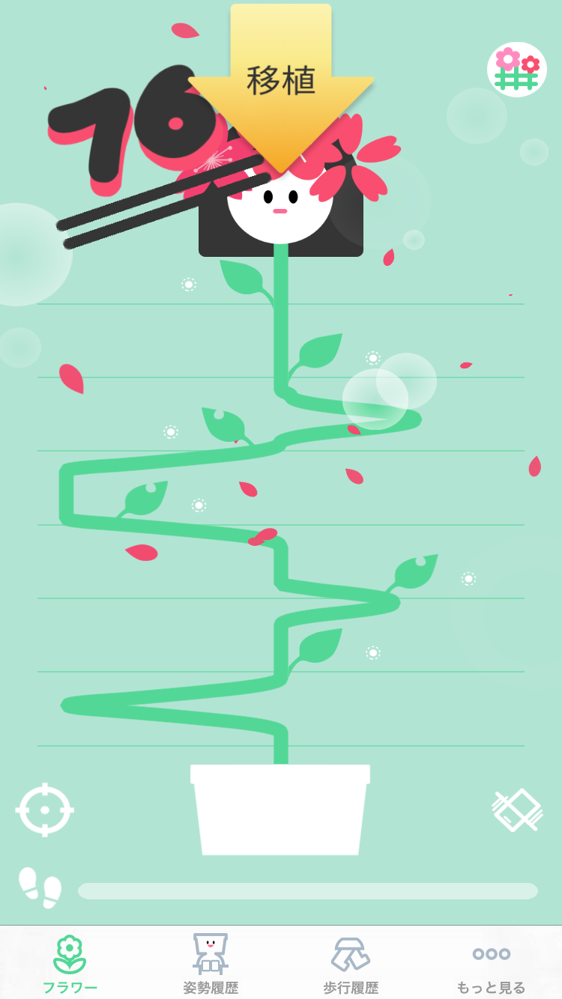

꽃 ー 식물선택

|
꽃 - 식물심기완료

- 식물을 심으면 화분의 얼굴이 나타납니다.
- 이제 식물은 자세에 따라 자라기 시작합니다.
|
|
꽃 ー 진동버튼

- 일정시간 안좋은 자세를 유지하면 SEED는 진동으로 알려줍니다.
- 혹시 진동이 방해가 된다면 버튼을 눌러서 진동을 끄세요.
|
|
꽃 - 가든버튼

- 키운 식물의 목록을 확인 할 수 있는 가든 화면으로 이동하는 버튼입니다.
|
꽃 ー 해

- 해는 현재 자세를 실시간으로 나타냅니다.
- 왼쪽다리를 오른쪽으로 꼬으거나, 오른쪽으로 삐딱하게 앉아있다면 해는 오른쪽으로 이동합니다.
- 오른쪽다리를 왼쪽으로 꼬으거나, 왼쪽으로 삐딱하게 앉아있다면 해는 왼쪽으로 이동합니다.
|
꽃 ー 자라는 중

- 식물은 해의 방향에 따라서 자랍니다.
- 안좋은 자세를 오랫동안 유지하면 식물이 힘들어 합니다.
|
|
꽃 ー 목마름

- 장시간 앉아있으면 식물의 색상이 변하고 목말라 합니다.
- 일어서서 식물을 회복시켜주세요.
|
|
꽃 ー 걸음게이지

- 식물을 심은 이후의 걸음수는 화면 아래의 게이지에 반영이 됩니다.
|
|
꽃 ー 물주기

- 걸음 게이지가 모두 차면 물주기 화면이 나타나 식물에게 물을 줄 수 있습니다.
- 식물에게 물을 주고 건강한 식물을 키우세요~
|
|
꽃 ー 다자란 식물

- 식물이 마지막 선까지 자라게 되면 꽃을 피웁니다. 식물이 다 자라면 더이상 줄기와 걸음수가 업데이트 되지 않습니다.
- 식물을 화단으로 옮겨 심어주세요.
|
꽃 ー 식물결과

- 식물을 옮겨심기 전에 요약정보를 확인할 수 있습니다.
- 선택여하에 따라서 이 식물을 키우는 동안에 통증이 있던 부위, 통증 정도의 기록을 남길 수 있습니다.
|